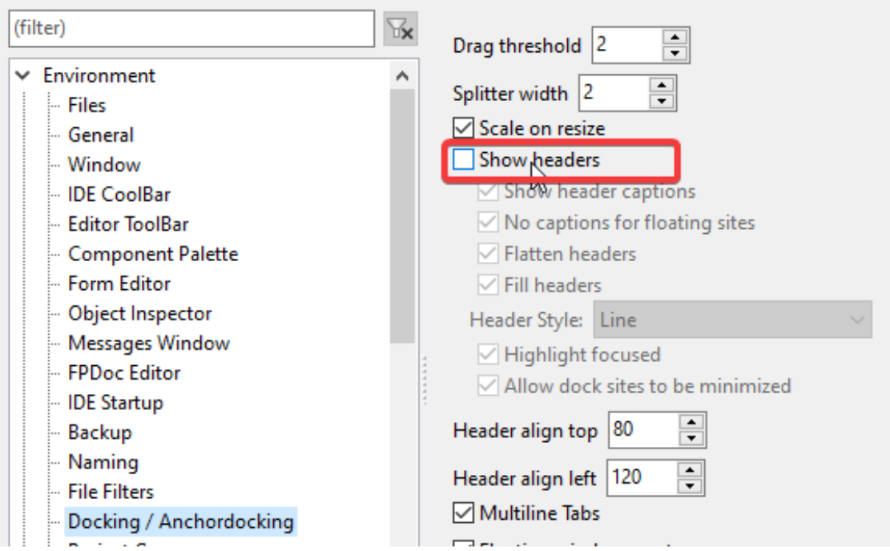
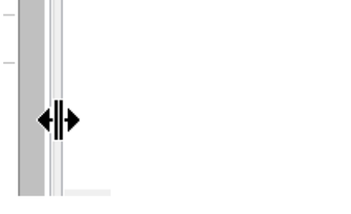
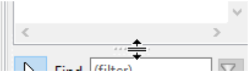

Você ocultou os cabeçalhos e gostaria de exibiu-los?
Caso queira que apareça novamente os cabeçalhos, basta clicar com o botão direito sobre onde elas estavam e reverter o processo. Mas como agora elas estão "imagináveis" poderá ser difícil encontrá-las se você não ligou a opção “Hightlight focused” que vimos no passo anterior. Se for este o caso então vá no menu Tools->Options->Environment->Dock/Anchordocking e ligue a opção “Show headers” (Exibir cabeçalhos):

Você só precisará disso quando lhe ocorrer a necessidade de uma nova docagem.
Na prática você não precisa dos cabeçalhos quando sua intenção for mover ou redimensioná-los, basta movimentar o mouse com mais cuidado nas extremidades e verá o mouse mudar sua aparência para:

ou

Isso indicará onde poderá mover ou redimensioná-los.